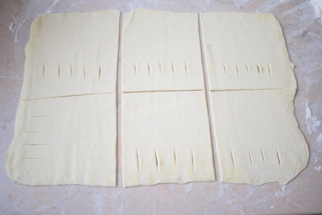

Підготуйте все необхідне. Листкове тісто можна зробити самостійно або купити готове. Куплене тісто заздалегідь розморозьте при кімнатній температурі близько 2 годин або згідно з інструкцією на упаковці. Фарш можна використовувати з будь-якого м'яса. У мене фарш зі свинини.
Цибулю очистіть від лушпиння, обполосніть у прохолодній воді, обсушіть паперовим рушником і дрібно наріжте. Додайте нарізану цибулю до фаршу. Яйце помийте та розділіть на білок і жовток. Білок додайте у фарш, а жовток залиште для змащування пиріжків.
У фарш додайте трохи солі та спеції за смаком. Усю масу добре перемішайте.
Листкове тісто розкачайте на злегка присипаній борошном поверхні та розріжте на прямокутники. На одній половині кожного прямокутника зробіть невеликі надрізи.

На другу половину викладіть невелику кількість фаршу і накрийте тією, половинкою, яка з надрізами. Защипніть краї.
Листкові пиріжки викладіть на деко для випічки, застелене пекарським папером. Верх кожного пиріжка змастіть жовтком. Це необхідно, щоб вони підрум'янилися. Поставте деко в духовку, розігріту до 180 градусів, приблизно на 30-35 хвилин. Час вказано приблизно, орієнтуйтеся на свою духовку.
Готові пиріжки стануть красивого золотистого кольору. Вийміть їх із духовки та трохи остудіть. М'ясні пиріжки з готового листкового тіста смачні як у гарячому вигляді, так і в холодному. Подавайте їх разом із солодким чаєм. Смачного!